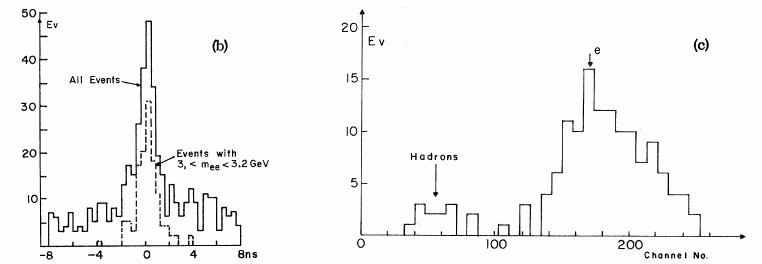

You discovered the J/ψ meson!

The J/ψ is a meson consisting of a charm quark and its antiquark. It is the first excited state of the charmonium (a bound charm-anticharm state), and was discovered independently by two research groups in 1974: one at the Stanford Linear Accelerator Center, led by Burton Richter, and one at the Brookhaven National Laboratory, led by Samuel Ting of MIT. Richter and Ting were awarded the 1976 Nobel Prize in Physics for their shared discovery.
The J/ψ is the only particle with a two-letter name, as a result of its nearly simultaneous discovery by two independent groups. Ting wanted to name the particle “J”, while Richter called it “SP” (after the SPEAR accelerator used at SLAC), a name none of his colleagues liked. Richter finally settled on the Greek letter “ψ” (pronounced “psi”).
Since the scientific community considered it unjust to give one of the two discoverers priority, most subsequent publications have referred to the particle as the “J/ψ”.